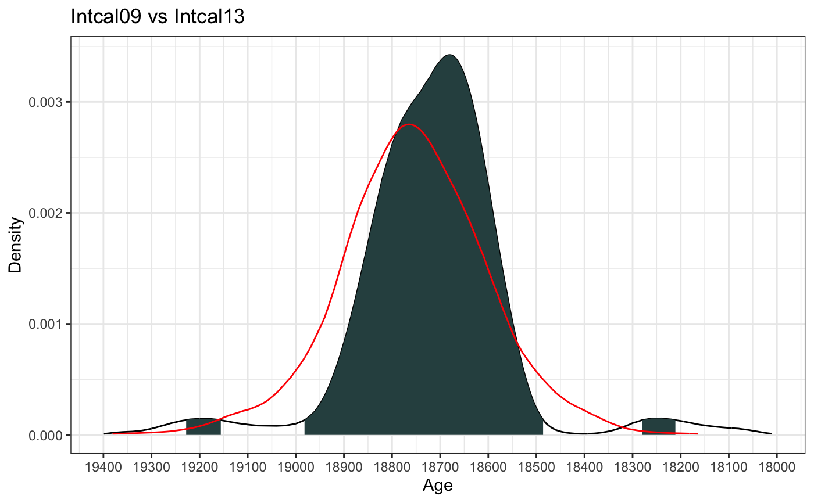

createCalCurve.RdA function for creating a new calibration curve not already available in Bchron
createCalCurve( name, cal_ages, uncal_ages, one_sigma = rep(0, length(cal_ages)), path_to_cal_curves = getwd() )
| name | The name of the new calibration curve |
|---|---|
| cal_ages | A vector of the calendar/calibrated ages in years before present |
| uncal_ages | A vector of values of uncalibrated ages in appropriate units (e.g. 14C years BP) |
| one_sigma | The one sigma (one standard deviation) values in uncalibrated units. If left blank it assumes these are all zero |
| path_to_cal_curves | The path to the calibration curves. Will write by default to the working directory |
All calibration curves are stored by Bchron in the standard R gzipped text format. You can find the location of the calibration curves by typing system.file('data',package='Bchron'). Any created calibration curve will be converted to this format. However R packages are not allowed to write to this directory so it is up to the user to put the resulting calibration curve file in the appropriate directory. It can then be used as in the examples below. However note that re-installing Bchron will likely over-write previously created calibration curves so you should make sure to store the code used to create it. As a short-cut to copying it by hand you can instead use the file.copy command in the example below.
# Load in the calibration curve with: intcal09 = read.table(system.file('extdata/intcal09.14c', package = 'Bchron'), sep=',') # Run createCalCurve createCalCurve(name='intcal09',cal_ages=intcal09[,1], uncal_ages=intcal09[,2],one_sigma=intcal09[,3])#> Completed!# Copy the file to the right place file.copy(from = 'intcal09.rda', to = system.file('data',package='Bchron'), overwrite = TRUE) # Only need this if you've run it more than once#> [1] TRUE# Calibrate the ages under two calibration curves age_09 = BchronCalibrate(ages=15500, ageSds=150, calCurves = 'intcal09',ids='My Date', pathToCalCurves = getwd()) age_13 = BchronCalibrate(ages=15500,ageSds=150,calCurves = 'intcal13') # Finally plot the difference library(ggplot2) plot(age_09) + geom_line(data = as.data.frame(age_13$Date1), aes(x = ageGrid, y = densities), col = 'red') + ggtitle('Intcal09 vs Intcal13')